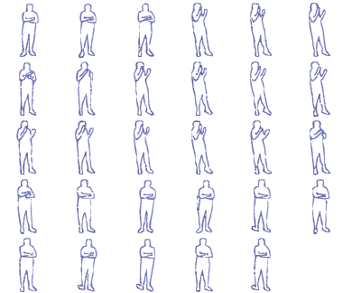
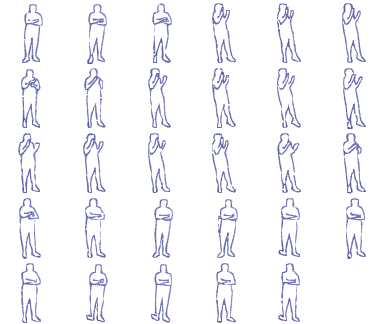

do {
} while(task_is_not_yet_complete);Open source maintainers, the owners and lead developers of open source projects, submit tasks to code relay. (Are you a maintainer? Learn how to submit tasks here)
Code Relay assigns these tasks to "Contributors"
So, Code Relay has replied to your email and assigned you a task. You are probably thinking:
You: "So, now I have to complete this task, right?"
This is code relay, relay as in relay race. Your job is to take this task, and make incremental progress. You could:
It's not a marathon all-night coding session. You get in, and get out within...let's say 5 minutes!
That's it.
Here's something you may or may not know: the world runs on open source software. But, let's not sugarcoat things: up until now, open source was hard, thankless, work. Work done by a small number of dedicated and passionate volunteers. Volunteers who are now facing burn-out and the stark realities of people and companies using the fruits of their labor without giving back.
So let's give back. Let's give back with a vengeance. If each of us spent a few minutes a day, we could contribute an enormous amount of code, measured in billions of lines. No kidding. Let me show you, but first, let me introduce you to our goal:
If we can get every one of the to spend 5 minutes a day working on open source code, using code relay. We will get:
For comparison, that's enough to write :
[2]Source is here. Admittedly, the data looks a little outdated, and everyone knows that lines-of-code is a shaky measurement at best, but this is just some back-of-the-napkin math
Have better data? Please make a pull request on the wiki here
Now that you took 5 minutes to learn what Code Relay is all about and why, the next logical step is to spend the next 5 minutes trying it out:
That's it!
Your name, email address, or any other personal information is not sold to or shared with any third-parties. Check out our privacy policy
Any time. Any place.
No. Code Relay is free for both Maintainers and Contributors. Code Relay exists to make the world a better place.
All tasks submitted to Code Relay must be for a project licensed with an Open Source Initiative (OSI) approved license, which means the project meets OSI's definition of open source.
Practically, this ensures that all of your contributions are going to help the community, not to do someone's job for them.
No. This platform is meant to be used with those services, not replace them.
No. Code relay is meant to supplement current workflows, not replace.
Since you have ventured this far down, I have a treat for you. Below is the code for a game of life using the code for this game of life as the input!
It's editable too, so happy hacking!
"use strict";
var __rest =
(this && this.__rest) ||
function (s, e) {
var t = {};
for (var p in s)
if (
Object.prototype.hasOwnProperty.call(
s,
p
) &&
e.indexOf(p) < 0
)
t[p] = s[p];
if (
s != null &&
typeof Object.getOwnPropertySymbols ===
"function"
)
for (
var i = 0,
p = Object.getOwnPropertySymbols(
s
);
i < p.length;
i++
) {
if (
e.indexOf(p[i]) < 0 &&
Object.prototype.propertyIsEnumerable.call(
s,
p[i]
)
)
t[p[i]] = s[p[i]];
}
return t;
};
const lifeCanvasId = "life";
const codeId = "code";
const playGame = () => {
if (globalThis.oldCode == null) {
firstTimeSetup();
}
const cnvs = document.getElementById(
lifeCanvasId
);
const context =
cnvs === null || cnvs === void 0
? void 0
: cnvs.getContext("2d");
if (!context || !cnvs) {
return;
}
context.font = "13px monospace";
const color = "#282c34";
let timeSinceLastDrawFrame = 0;
let timeOfLastFrame = performance.now();
let firstState = true;
let evenOdd = false;
const runLoop = (
totalTimeElapsed
) => {
if (!globalThis.runningLife) {
return;
}
requestAnimationFrame(runLoop);
timeSinceLastDrawFrame +=
totalTimeElapsed -
timeOfLastFrame;
timeOfLastFrame = totalTimeElapsed;
if (
timeSinceLastDrawFrame >=
globalThis.msDelay
) {
firstState = false;
timeSinceLastDrawFrame = 0;
globalThis.cells =
globalThis.theNextCells;
nextState();
}
if (firstState) {
evenOdd = !evenOdd;
if (evenOdd) {
return;
}
}
drawCells(
context,
cnvs.width,
cnvs.height,
color,
timeSinceLastDrawFrame /
globalThis.msDelay
);
};
requestAnimationFrame(runLoop);
};
const maxCells = 300;
let stationaryColor =
"rgb(255,255,255)";
let stationaryCharacter = "m";
const firstTimeSetup = () => {
var _a;
codeToCells();
const cnvs = document.createElement(
"canvas"
);
cnvs.id = lifeCanvasId;
const code = document.getElementById(
codeId
);
const ratio =
window.devicePixelRatio || 1;
const w = code.offsetWidth;
const h = code.offsetHeight;
cnvs.width = w * ratio;
cnvs.height = h * ratio;
cnvs.style.width = `${w}px`;
cnvs.style.height = `${h}px`;
(_a =
cnvs === null || cnvs === void 0
? void 0
: cnvs.getContext("2d")) ===
null || _a === void 0
? void 0
: _a.scale(ratio, ratio);
code.replaceWith(cnvs);
globalThis.oldCode = code;
};
const codeToCells = () => {
const code = document.getElementById(
codeId
);
if (!code) {
return;
}
const cells = [];
let x = 0;
let y = 0;
for (const node of code.childNodes) {
const { text, color } = nodeToText(
node
);
for (const char of text) {
switch (char) {
case "\n":
y += 1;
x = 0;
continue;
case " ":
x += 1;
continue;
default:
break;
}
cells.push({
x,
y,
character: char,
color,
});
x += 1;
}
}
globalThis.cells = cells;
nextState();
};
const nodeToText = (node) => {
var _a;
if (node.nodeType == 3) {
return {
text:
(_a = node.textContent) !==
null && _a !== void 0
? _a
: "",
color: "white",
};
}
return {
text: node.innerText,
color: getComputedStyle(node).color,
};
};
const nextState = () => {
const {
newLiveCells,
newBornCells,
dyingCells,
} = nextCells(globalThis.cells);
globalThis.theNextCells = newLiveCells;
globalThis.newBornCells = newBornCells;
globalThis.dyingCells = dyingCells;
};
const nextCells = (liveCells) => {
const newCellMap = new Map();
for (const liveCell of liveCells) {
setupAdjacentCells(
liveCell,
newCellMap
);
}
const newLiveCells = [];
const newBornCells = [];
const dyingCells = new Set();
const stationaryOdds =
(0.25 * globalThis.msDelay) / 1000;
for (let _a of newCellMap) {
const [_, _b] = _a,
{ count, live } = _b,
cell = __rest(_b, [
"count",
"live",
]);
if (
count != 3 &&
(!live || count != 2)
) {
if (live) {
dyingCells.add(
cell.y * maxCells + cell.x
);
}
continue;
}
if (
live &&
Math.random() < stationaryOdds
) {
if (Math.random() < 0.5) {
const oldColor = cell.color;
cell.color = stationaryColor;
stationaryColor =
oldColor !== null &&
oldColor !== void 0
? oldColor
: stationaryColor;
} else {
const oldCharacter =
cell.character;
cell.character = stationaryCharacter;
stationaryCharacter =
oldCharacter !== null &&
oldCharacter !== void 0
? oldCharacter
: stationaryCharacter;
}
}
newLiveCells.push(cell);
if (!live && cell.parent != null) {
newBornCells.push(cell);
}
}
return {
newLiveCells,
newBornCells,
dyingCells,
};
};
const setupAdjacentCells = (
liveCell,
newCellMap
) => {
const key =
liveCell.y * maxCells + liveCell.x;
for (let row = -1; row <= 1; row++) {
for (
let column = -1;
column <= 1;
column++
) {
setupCell(
liveCell,
key,
row,
column,
newCellMap
);
}
}
};
const setupCell = (
parentCell,
key,
row,
column,
out
) => {
var _a, _b;
const {
character,
color,
x,
y,
} = parentCell;
const newKey =
key + column + row * maxCells;
const newCell =
(_a = out.get(newKey)) !== null &&
_a !== void 0
? _a
: {
count: 0,
x: x + column,
y: y + row,
};
if (newKey == key) {
newCell.live = true;
newCell.character =
Math.random() < 0.00005
? "🐑"
: character;
newCell.color = color;
} else {
newCell.count += 1;
if (
newCell.live &&
Math.random() < 0.2
) {
if (Math.random() < 0.5) {
newCell.color = color;
} else {
newCell.character = character;
}
}
if (
!newCell.live &&
newCell.count <= 3
) {
const odds =
newCell.count == 2
? 0.5
: 0.333333;
const isParent =
newCell.character == null ||
Math.random() < odds;
newCell.character = isParent
? character
: newCell.character;
if (isParent) {
newCell.parent = parentCell;
}
newCell.color =
Math.random() < odds
? color
: (_b = newCell.color) !==
null && _b !== void 0
? _b
: color;
}
}
out.set(newKey, newCell);
};
const drawCells = (
ctxt,
width,
height,
blankColor,
frameProgress
) => {
const cells = globalThis.cells;
const newBornCells =
globalThis.newBornCells;
const dyingCells =
globalThis.dyingCells;
ctxt.fillStyle = blankColor;
ctxt.fillRect(0, 0, width, height);
const transparencyColor =
1 - frameProgress;
for (const {
x,
y,
character,
color,
} of cells) {
ctxt.fillStyle = color;
if (
dyingCells.has(y * maxCells + x)
) {
ctxt.globalAlpha = transparencyColor;
}
ctxt.fillText(
character,
x * 7.16,
y * 15 + 12
);
ctxt.globalAlpha = 1;
}
for (const {
x,
y,
character,
color,
parent,
} of newBornCells) {
ctxt.fillStyle = color;
const newX =
(x - parent.x) * frameProgress +
parent.x;
const newY =
(y - parent.y) * frameProgress +
parent.y;
ctxt.fillText(
character,
newX * 7.16,
newY * 15 + 12
);
}
};
playGame();


 
